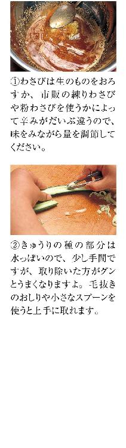
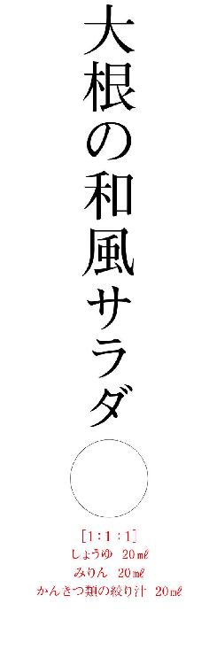
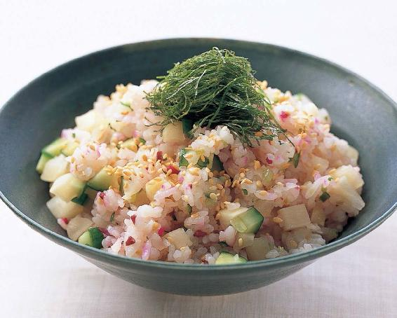
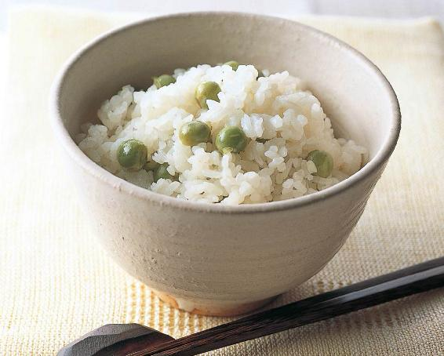
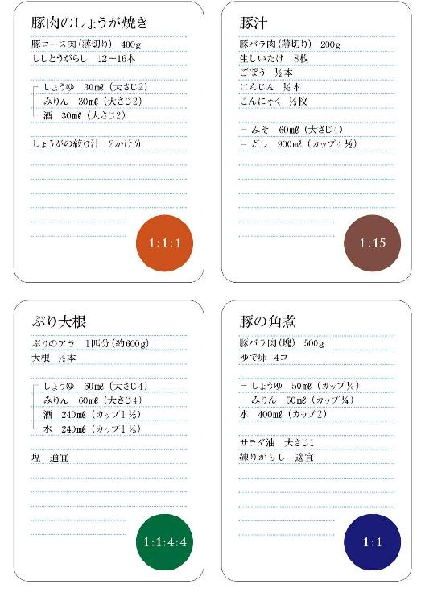

| 割合で覚える和の基本 | |
| 村田 吉弘 | |
| (2001) | |
料理って、不思議なもんです。
いろんな調味料を入れればうまくなる、めんどうな手間をかけるほどうまくなる、とは限らない。
特に家庭料理では、いらんもんは入れない、余計なことはせんでもいい。
和食の味つけは難しいと思われがちですが、実はごくシンプルな「割合」でできているのです。
単純明解なこの「割合」さえ覚えれば、定番のおかずは万全。あれこれ悩んでいたのが嘘のように、ピタリと味が決まるはずです。
［目次］
◆味の基本は１：１
◆１：１：１でバリエーション
＊わさび豚
＊大根の和風サラダ
＊きゅうりとわかめの酢の物
＊たこと長芋の酢の物
＊鶏肉の照り煮
＊豆腐のステーキ
＊豚肉のしょうが焼き
＊ぶりの照り焼き
＊鶏のから揚げ
＊いんげんのごまあえ
＊蒸しなすのごまだれ
◆１：１：８で煮物上手
◆魚の煮物は１：１：４：４
◆しょうゆの代わりにみそを使うときは
◆１：１：10で乾物上手
◆旬の煮物は１：１：15
◆どんぶりはだしをきかせて７：５：３
◆ご飯物のおいしい割合
◆汁物のおいしい割合
◆つゆも手づくり１：１：７と１：１：５
column
○本文の材料表のＥは１人分のおよそのエネルギー、Ｔはおよその調理時間を示します。
○本書で使用している計量カップは２００㎖、計量スプーンは大さじ15㎖、小さじ５㎖です（１㎖＝１㏄）。
○電子レンジは、各メーカーの使用説明書などをよくお読みの上、正しくお使いください。
特に金属製の部分がある容器や非耐熱性ガラスの容器、漆器、耐熱温度が１２０℃未満の樹脂製容器などを使うと、故障や事故の原因になる場合がありますのでご注意ください。
○本文中で表示した電子レンジの調理時間は５００Ｗのものです。６００Ｗの場合は０・８倍、４００Ｗの場合は１・２倍にしてください。

味の基本は１：１
肉じゃが、きんぴら、魚の煮つけ。
「得意な料理は？」と聞かれてこんなおかずが挙げられたら、ずいぶん和食上手な感じがします。こういうシンプルなおかずは、材料も調理の仕方もどうということのないものなのに、苦手だという人が多いのです。
いざつくってみると、なかなか味が決まらない。しょうゆを足したり、砂糖を足したり、ひねくり回しているうちに、「基本の味」から離れていってしまうんですね。
シンプルなおかずなら、味つけも思いきってシンプルにしてみてください。
しょうゆとみりんが１：１。
調味料はそれだけです。薄口しょうゆを使う場合でも、この割合は変わりません。そういうとかならず「お酒は入れないのですか」「お砂糖はいりませんか」という声が聞こえてきます。
きちんとしたみりんを使っていれば、酒も砂糖もいりません。みりんというのは、蒸したもち米と米こうじに焼酎などのアルコールを加えて熟成させて絞ったものですから、日本酒の風味と砂糖の甘みの両方を兼ね備えているわけです。ただし、この役割を請け負えるのはきちんとしたみりん、「本みりん」に限ります。「みりん風調味料」はアルコール分が１％未満と低く、うまみや甘みを補うために甘味料などが加えられているので、この割合ではうまいこと「基本の味」を出すことができません。
しょうゆとみりんが１：１。
みりんは本みりんを使うこと。
まずはこの二つを守って、次の料理をつくってみてください。不思議なぐらい味がピタリと決まりますよ。これが和食の「基本の味」。ご飯がどんどんすすむ味です。
みりんの話
いい素材を使えば、おいしい料理ができる。それと同じで、いい調味料を使えば、料理の腕がグンと上がります。
私がみなさんにまず見直してもらいたいのは、みりんです。みりんは本来、もち米、米こうじ、焼酎を原料とする甘いお酒、飲み物でした。それが次第に調味料として使われるようになったのですが、酒類の販売に規制ができて、酒屋以外では扱えなくなったため、アルコール度数の低い「みりん風調味料」や塩分を加えて飲めないようにした「発酵調味料」などが造られるようになったわけです。本物のみりんがわざわざ「本みりん」と名のるのは、いろんな親戚ができてしまったからなんですね。
この違いは、一口飲んでみればわかります。おいしいですよ。我が家では、クラッシュアイスでオン・ザ・ロックにすることもあります。何十日もかけて熟成させる間に米が糖化して生み出す、まろやかでふくよかな甘みとうまみ。砂糖やアミノ酸を加えることでは決して出せない複雑な味わいです。みりんの糖分は水分をしっかりつかまえ、料理に美しい照り、つやを出します。また、たんぱく質をギュッとしめる働きがあり、素材の煮くずれを防いでくれます。ただし、長時間調理していると肉や魚を堅くしてしまうので、短時間で仕上げる、あるいは素材にあらかた火を通してから加える必要があることも、覚えておいてください。

材料も味つけもこの上なくシンプルなレシピですが、こんなに簡単でうまい肉じゃがは、ちょっとほかにありませんよ。
材料（４人分）
合わせ地［１：１］
しょうゆ60㎖（大さじ４）
みりん60㎖（大さじ４）
牛薄切り肉２５０ｇ じゃがいも３コ たまねぎ２コ 絹さや12枚
○サラダ油
Ｅ２７０ Ｔ20分
つくり方
１ 合わせ地に水４８０㎖（カップ２）を混ぜておく。
２ じゃがいもは皮をむいて芽をくり抜き、６～８等分に切る。耐熱性のボウルに入れてラップフィルムをかけ、約６分間電子レンジにかける（写真①）。
３ たまねぎは縦半分に切り、繊維にそって１㎝幅に切る。牛肉は一口大に切る。
４ 鍋にサラダ油少々を熱し、たまねぎとじゃがいもを炒める（写真②）。全体に油がなじんだら１を加える。
５ 牛肉を加えて菜ばしで手早くほぐし（写真③）、強火にして煮立てる。沸いてきたら火を弱め、水でぬらした落としぶたをして（写真④）、約７分間煮込む。
６ 煮汁が量ぐらいになったら落としぶたを取り（写真⑤）、筋を取った絹さやを加え、汁けを飛ばしながら約１分間煮て器に盛る。
魚の煮つけも下処理さえきちんとすれば、１：１でおいしくできます。最後に煮汁を回しかけ、照りよくふっくら仕上げましょう。
材料（４人分）
合わせ地［１：１］
しょうゆ60㎖（大さじ４）
みりん60㎖（大さじ４）
かれい（１切れ約１５０ｇ）４切れ ごぼう１本
絹さや12枚 しょうが（せん切り）１かけ分
Ｅ１８０ Ｔ10分
つくり方
１ 合わせ地に水４８０㎖（カップ２）を混ぜておく。
２ かれいは皮目に切り込みを入れる（写真①）。
３ 鍋に湯を沸かして２をサッとくぐらせ（写真②）、ざるに上げて水けをきる。
４ ごぼうはたわしできれいに洗い、３㎝長さに切る。太い部分はさらに縦半分に切る（写真③）。
５ 大きめの鍋に１、３、４を入れ（写真④）、水でぬらした落としぶたをして強火にかける。
６ 絹さやは筋を取り、別の鍋でサッとゆでる。
７ ５の煮汁が量ぐらいになったら、落としぶたを取って火を弱め、かれいに煮汁をかけながら１～２分間煮詰める（写真⑤）。
８ ６を加えてサッと煮汁をからめ、火から下ろす。かれいを器にのせてごぼうと絹さやを添え、しょうがのせん切りをあしらう。
関東の肉じゃがに対して、こちらは京都の定番「おばんざい」です。素材の淡い色を生かすため、薄口しょうゆを使います。
材料（４人分）
合わせ地［１：１］
薄口しょうゆ20㎖（小さじ４）
みりん20㎖（小さじ４）
小松菜３００ｇ 油揚げ（大）２枚 いりこ10匹
Ｅ90 Ｔ８分
つくり方
１ 小松菜はザク切りにし、水けをよくきる。油揚げは食べやすい大きさに切る。
２ 鍋に水３００㎖（カップ１）といりこを入れて火にかける。煮立ったら合わせ地と油揚げを加え、中火で煮る。
３ 油揚げがクタッとなったら小松菜を加え（写真）、しんなりするまで煮る。
４ 器に盛り、あれば青柚子の皮のせん切りをあしらう。
「ささがきはめんどう」と思うなら、ピーラーを使えばいいんですよ。あとは手早く炒めて、シャキシャキッとした歯ざわりに。
材料（４人分）
合わせ地［１：１］
しょうゆ40㎖（カップ）
みりん40㎖（カップ）
ごぼう１本 こんにゃく枚
するめ（またはさきいか）50ｇ にんじん４㎝
赤とうがらし（輪切り）本分 いりごま（白）適宜
○サラダ油
Ｅ１００ Ｔ10分
つくり方
１ ごぼうはたわしできれいに洗い、ピーラーでささがきにして水にさらす。こんにゃくとするめはごぼうと長さをそろえて細切りにする。にんじんはせん切りにし、サッとゆでておく。
２ 鍋にサラダ油少々を熱し、赤とうがらしを炒める。香りが立ったら、こんにゃくを加えて炒める。
３ するめ、にんじん、ごぼうを順に加えながら炒め合わせ、全体に油がなじんだら合わせ地を加える。
４ 汁けがなくなるまで混ぜながら炒め煮し、いりごまをふってサッと混ぜる。
短時間でできる、かっしりと堅いめの角煮です。とろけるように柔らかいのがお好みなら、圧力鍋で煮るといいですよ。
材料（４人分）
合わせ地［１：１］
しょうゆ50㎖（カップ）
みりん50㎖（カップ）
豚バラ肉（塊）５００ｇ ゆで卵４コ 練りがらし適宜
○サラダ油
Ｅ５８０ Ｔ45分
つくり方
１ 合わせ地に水４００㎖（カップ２）を混ぜ合わせておく。
２ 豚肉は８等分に切る。サラダ油大さじ１を熱した鍋で肉の表面を焼き、まんべんなく焼き色がついたら、出てきた脂を紙タオルなどに吸わせて取り除く。
３ ２の鍋に１とゆで卵を加え、強火にかける。煮立ったらアクを取り、水でぬらした落としぶたをして中火で40分間煮込む。
４ 汁けがほとんどなくなったら器に盛り、あれば木の芽をあしらい、練りがらしをのせる。
炒める前に、えびと油をよくなじませるのがこつ。えびから出たうまみは、なすがしっかり吸い込みます。
材料（４人分）
合わせ地［１：１］
しょうゆ・薄口しょうゆ30㎖（各大さじ２）
みりん60㎖（大さじ４）
なす４コ えび（ブラックタイガーなど。正味）２００ｇ みょうが３コ
○サラダ油 かたくり粉
Ｅ１７０ Ｔ10分
つくり方
１ 合わせ地に水４８０㎖（カップ２）を混ぜ合わせておく。
２ えびは殻と背ワタを取り除き、包丁でたたいてミンチ状にする。なすは縦半分に切って長さを半分に切り、１㎝幅の棒状に切る。みょうがは小口から薄切りにし、水にさらしておく。
３ フライパンにサラダ油大さじ２を入れ、火にかける前に２のえびを加えてよくなじませる。中火にかけ、菜ばしでほぐしながら炒め、えびが色づいたらなすを加えて炒め合わせる（写真）。
４ なすがしんなりしたら１を加え、煮立ったら火を弱めて約２分間煮る。その間にかたくり粉大さじ３を同量の水で溶いておく。
５ なすに火が通ったら火を強め、４の水溶きかたくり粉を回し入れてとろみをつける。器に盛り、水けをよくきったみょうがをのせる。

１：１：１でバリエーション
今度は先ほどの基本の味にもうひとつ別の調味料を加えて、バリエーションを広げていきましょう。
これも割合はいたって簡単、全部同量の１：１：１。
たとえば、しょうゆとみりんに同量の酢を加えれば、まろやかな味わいの酢じょうゆができます。酢の物はもちろん、和風のドレッシングといった感覚で、サラダや豆腐にかけてもおいしいです。この頃は、酢の物を敬遠する人も案外いるようですが、そういう方は酢を見直してみてください。原料が米１００パーセントの米酢なら、とんがった酸味やえぐみはつかないものです。ときには酢の代わりにレモンや柚子、かぼすといった、かんきつの絞り汁を使ってみると、酸っぱいだけでなく、香りもいろいろ楽しめますよ。
１：１に酒を加えた合わせ地は、照り焼きのたれや肉料理の下味に。酒が入ると肉や魚のにおい消しにもなりますし、うまみもつやもぐっと増す。ほっとするような基本の味に、きりっとした強さが加わるんですね。
それから、練りごま。これは蒸し鶏や蒸しなすにかけたり、野菜のごまあえにしたり。たいへん便利なごまだれになります。しゃぶしゃぶをするときは、酢の１：１：１と練りごまの１：１：１で、たれが２種類できてしまいますから、市販品のお世話にならんでいいわけです。
１：１に酢、酒、ごま。
これでメインのおかずが煮物から焼き物、揚げ物まで広がりました。小鉢も一つ二つ、並べられるようになりましたね。
酒の話
みなさん、酒は「飲むもの」と思ってます。ところが私のとこのような料理屋では、お客さんが飲まれる酒よりも調理場で使う酒のほうが、ずっと量が多いです。しょうゆやみりんと比べても多い。
酒の役割はいろいろあります。アルコールの働きによって肉や魚のくさみを取ること、素材を柔らかくしたり味をしみ込みやすくすること。そしてもう一つ、米から生まれた豊かな香りとうまみを加えること。つまり日本料理にとって酒は、だしの一種でもあるんですね。
本みりんに対して「みりん風調味料」なるものがあるように、酒の中にも「料理酒」というものがありますが、熟成させた米の風味が料理をおいしくするわけですから、わざわざ他のうまみを足した酒を使う必要はないと思います。ですから料理に使う酒についてたずねられたとき、私はいつも、「飲める酒を使いなさい」と答えることにしています。一口飲んで、うまいなあと感じる程度のもの。
ただし、うますぎる酒はだめです。高い吟醸酒ならさぞかし料理もうまくなる、と思うのは間違い。吟醸香や余計な甘みが口に残って、でき上がりの味がしつこくなってしまいます。いわゆる紙パックやワンカップのもので充分なのです。
みりんは本みりん。酒は飲める酒。そんなふうに心得てください。
豚肉の冷しゃぶを応用した、サラダ感覚のおかず。ちょっと辛いかなあと思うぐらい、わさびをきかせてください。
材料（４人分）
合わせ酢［１：１：１］
しょうゆ１２０㎖（カップ）
みりん１２０㎖（カップ）
酢１２０㎖（カップ）
豚もも肉（薄切り）４００ｇ きゅうり３本 みょうが４コ おろしわさび適宜
Ｅ２００ Ｔ８分
つくり方
１ 合わせ酢におろしわさびを加え、よく混ぜ合わせてたれをつくる（写真①）。
２ きゅうりは縦半分に切ってヘタと種の部分を除き（写真②）、斜め薄切りにして冷水にさらす。
３ みょうがも薄い小口切りにして冷水にさらす。
４ 70～80℃の熱湯（写真③）とたっぷりの氷水を用意する。
５ ４の熱湯に豚肉を広げ入れ、色が変わったら氷水に取る（写真④）。水けをよくふき取り（写真⑤）、一口大に切って１につける。
６ ２のきゅうりの水けを絞って器に広げ、中央に豚肉を盛り、みょうがの水けを絞ってのせる。


酢の代わりにかんきつ類の絞り汁を混ぜると香りもよく、さわやか。かぼすでも柚子でも、季節のものを使ってください。
材料（４人分）
合わせ酢［１：１：１］
しょうゆ20㎖（小さじ４）
みりん20㎖（小さじ４）
かんきつ類（かぼす、レモンなど）の絞り汁20㎖（小さじ４）
大根２００ｇ かまぼこ枚 焼きのり１枚
おろしわさび大さじ１ いりごま（白）大さじ１
Ｅ60 Ｔ５分
つくり方
１ 大根は皮をむいて５㎝長さ、２～３㎜角の棒状に切り、水にさらす。かまぼこも同じ大きさに切る。のりは火で軽くあぶり、もみのりにする。
２ 合わせ酢におろしわさびを混ぜ合わせておく。
３ ボウルに１の大根、かまぼこ、いりごまを入れてざっと混ぜ、２のドレッシングをかけてよくあえる。器に盛り、もみのりを天盛りにする。
まろやかな合わせ酢にしょうがの絞り汁でアクセントを加えました。
材料（４人分）
合わせ酢［１：１：１］
薄口しょうゆ20㎖（小さじ４）
みりん20㎖（小さじ４）
酢20㎖（小さじ４）
きゅうり４本 塩蔵わかめ60ｇ
しょうがの絞り汁かけ分
○塩
Ｅ30 Ｔ７分
つくり方
１ きゅうりは塩を多めにまぶして板ずりし、水で洗う。小口から薄切りにして塩少々をふっておき、水けが出てきたら軽く絞り、かぶるぐらいの水につけてしばらくおく。
２ 塩蔵わかめは水を数回替えて洗いながら戻す。熱湯にサッとくぐらせて水けをよく絞り、一口大に切る。
３ ボウルに合わせ酢としょうがの絞り汁を混ぜ合わせ、水けをよく絞ったきゅうりとわかめを加えてあえる。器に盛り、あれば花穂じその花をむしってあしらう。
たこと長芋、きゅうり。彩りもにぎやか。歯ごたえも三者三様、楽しめます。
材料（４人分）
合わせ酢［１：１：１］
薄口しょうゆ20㎖（小さじ４）
みりん20㎖（小さじ４）
酢20㎖（小さじ４）
ゆでだこの足１６０ｇ きゅうり本
長芋１２０ｇ しょうがの絞り汁かけ分
Ｅ70 Ｔ５分
つくり方
１ たこは２㎝角の乱切り、きゅうりはたこよりひと回り小さい乱切りにする。長芋は皮をむき、きゅうりと同じ大きさに切る。
２ ボウルに合わせ酢としょうがの絞り汁を混ぜ合わせ、１を加えてよくあえる。
鶏肉は厚みを均一にし、切り目を入れてから焼きましょう。こうすると火が通りやすく、味もしみやすく、焼き縮みも防げます。
材料（４人分）
合わせ地［１：１：１］
しょうゆ30㎖（大さじ２）
みりん30㎖（大さじ２）
酒30㎖（大さじ２）
鶏もも肉４００ｇ
ししとうがらし８本
粉ざんしょう適宜
○サラダ油
Ｅ２６０ Ｔ10分
つくり方
１ 鶏もも肉は厚みに包丁を入れて開き、焼いたとき縮まないようにところどころ切り目を入れる。ししとうがらしは縦に１本切り目を入れておく。
２ フライパンにサラダ油大さじ１を熱し、鶏肉の皮目を下にして入れ、中火で焼く。
３ 皮に焼き色がついたら裏返し、さらに５分間焼いてししとうがらしを加える。合わせ地を回しかけ、汁けをよくからめながら焼く（写真）。
４ 汁けがなくなったら火を止め、鶏肉を食べやすく切って器に盛る。ししとうがらしを添え、粉ざんしょうをふる。

風味が抜けるので豆腐は水きりしません。水けが出ないうちに、アツアツを食べてください。
材料（４人分）
合わせ酢［１：１：１］
しょうゆ20㎖（小さじ４）
みりん20㎖（小さじ４）
酒20㎖（小さじ４）
豆腐（木綿）１丁
細ねぎ適宜
削り節適宜
○薄力粉 サラダ油
Ｅ１４０ Ｔ５分
つくり方
１ 豆腐は表面の水けをふき、薄力粉を薄くはたく。細ねぎは小口切りにする。
２ フライパンにサラダ油大さじ２～３を熱し、１の豆腐の両面がきつね色になるまで焼く。合わせ地を注ぎ入れ、豆腐を数回裏返ししながら火を通す。
３ 汁けがほとんどなくなったら器に盛り、削り節と細ねぎをあしらう。
しょうがはすりおろしをそのままでなく、絞り汁だけを加えると、仕上がりがきれいです。
材料（４人分）
合わせ地［１：１：１］
しょうゆ30㎖（大さじ２）
みりん30㎖（大さじ２）
酒30㎖（大さじ２）
豚ロース肉（薄切り）４００ｇ
ししとうがらし12～16本
しょうがの絞り汁２かけ分
Ｅ２９０ Ｔ７分
つくり方
１ 合わせ地にしょうがの絞り汁を混ぜ合わせておく。
２ ししとうがらしはヘタを切り落とす。
３ フッ素樹脂加工のフライパンを熱し、豚肉を広げ入れる。両面が色よく焼けたら１と２を加え、汁けを飛ばしながら火を通す。

魚の照り焼きもフライパン一つで簡単につくることができます。甘辛いたれに、粉ざんしょうがよく合いますよ。
材料（４人分）
合わせ地［１：１：１］
しょうゆ80㎖（カップ）
みりん80㎖（カップ）
酒80㎖（カップ）
ぶり（切り身）４切れ
Ｅ２５０ Ｔ７分
つくり方
１ フッ素樹脂加工のフライパンを強火で熱し、ぶりを並べ入れ、両面に手早く焼き色をつける。
２ 中火にして合わせ地を注ぎ入れ、ぶりにからめながら火を通す。
３ 汁けが煮詰まってぶりに照りが出たら器に盛り、残った汁をかけ、好みで粉ざんしょうをふる。『いんげんのごまあえ』を添えてもよい。
鶏肉は思ったより火が通りにくいものです。油は低温。弱火でじっくり、ゆっくり揚げれば失敗しません。
材料（４人分）
合わせ地［１：１：１］
しょうゆ10㎖（小さじ２）
みりん10㎖（小さじ２）
酒10㎖（小さじ２）
鶏もも肉５００ｇ
溶き卵コ分
しょうがの絞り汁少々
にんにく（すりおろし）小さじ
レモン適宜
○かたくり粉 揚げ油
Ｅ３６０ Ｔ15分
つくり方
１ 鶏肉は大きめの一口大に切る。
２ ボウルに合わせ地と溶き卵、しょうがの絞り汁、にんにくを入れて混ぜる。鶏肉を加えて手でよくもみ込み（写真）、そのまま５分間ほどおいて味をなじませる。
３ ２の汁けがなくなるまでかたくり粉を少しずつふり入れ、ざっと混ぜ合わせる。
４ 揚げ油を１６５℃に熱し、３の肉をじっくりと揚げる。きつね色に色づいて油のはねる音が小さくなったら火を強め、カリッとさせてから引き上げる。
５ 油をきって器に盛り、くし形に切ったレモンを添える。
香ばしく、こくのあるごまあえをつくるこつは二つ。野菜の水けをよくきること。そして、食べる直前にあえること。
材料（４人分）
ごまだれ［１：１：１］
しょうゆ50㎖（カップ）
みりん50㎖（カップ）
練りごま（白）50㎖（カップ）
さやいんげん40本 いりごま（白）適宜
○塩
Ｅ１３０ Ｔ５分
つくり方
１ さやいんげんは両端を切り落とし、長さを半分に切る。塩少々を加えた熱湯でサッとゆで、冷水に取って冷やし、しっかり水けをきる。
２ ボウルにごまだれの材料を混ぜ合わせる。
３ 食べる直前に２に１を加えてあえる。器に盛り、いりごまをふる。
蒸しなすといっても蒸し器を使わないかんということはありません。電子レンジでも色よくふっくらできますよ。
材料（４人分）
ごまだれ［１：１：１］
しょうゆ60㎖（大さじ４）
みりん60㎖（大さじ４）
練りごま（白）60㎖（大さじ４）
なす４コ
○塩
Ｅ１５０ Ｔ８分
つくり方
１ なすはヘタを取って縦半分に切り、色が悪くなるのを防ぐため、切り口に塩少々をふる。耐熱性の容器に入れ、ラップフィルムをかけ、電子レンジに６分間かける。
２ なすの荒熱が取れたら、さらに縦４等分にし、食べやすい長さに切る。
３ ごまだれの材料を混ぜ合わせて器に適量を敷き、２をのせ、残りのごまだれを上からかける。

１：１：８で煮物上手
１：１という簡単な割合で、おいしい煮物がいくつもできました。ここでひとつ、このマジックの種明かしをしましょう。
じつは煮物には、しょうゆとみりんにもうひとつ、必要なものがあります。そう、煮汁のもとになる水分です。この水分量を仲間に入れた割合の代表が、この章で覚える１：１：８。
原則として、１：１：８の８は「だし」です。１：１の煮物のときは、だしの代わりに水を使っていたんですね。煮汁の少ないいり煮のきんぴらや煮汁をたっぷり残す青菜と揚げの煮物は例外ですが、さきほどの肉じゃがやかれいの煮物にも、しょうゆ、みりんの８倍に当たる水（鍋に入れて具にかぶるか、かぶらないかくらい）を加えて煮ています。肉や魚から味が出たり、いりこを加えて風味を出したりするような煮物だったので、だしを使わなくてもよかったわけです。
まず始めは、だしを使った１：１：８で、かつおや昆布の風味のきいた煮物をつくってみましょう。
章の後半では、８の水分を酒４＋水４にして、魚の煮物を作ります。魚と魚の味が重なってしまうので、ここではかつおのだしは使いません。
酒は魚のくさみを取り、肉質を柔らかくしてくれると同時に、うまみを加えてくれます。同量の酒と水で、かつおだしとは違ったタイプのだしを作ると考えてください。料理屋でするように水分の全量を酒にしてもいいのですが、魚のおいしさを引き出すのなら、酒と水半々でじゅうぶんです。
１：１：８と、その変形の１：１：４：４。数字も増えて、ちょっと理屈も出てきて、お勉強っぽくなりましたか。作り方は１：１と同じですから、やってみればどうということもありません。最後は落としぶたを取って煮詰め、煮汁をからませるように仕上げます。慣れてくればありあわせの材料でも、おいしい煮物が作れるようになりますよ。
霜降りの話・落としぶたの話
材料を入れるのは煮汁が煮立ってから...でなくてよろしい。
煮立ってきたらアクを...取らなくて結構。
難しく考えないで、パッパッといきましょう。野菜の下ごしらえもピーラーや電子レンジ、便利なものはなんでも使って楽したらいいんですよ。その代わり、ここだけは手をかけてやる、というポイントが二つあります。
一つは「霜降り」。くさみや脂のある魚や肉は、いったん湯通しするか熱湯を回しかけておく。表面がうっすら白くなることから、「霜降り」といいます。こうして表面のたんぱく質を固めてうまみを閉じ込め、まわりの汚れやぬめりを落としておけば、生臭みが出ませんし、煮ている間にアクをすくう手間も省けます。
もう一つは「落としぶた」。アルミホイルなどで代用する方法もありますが、材料がゴトゴト動いて煮崩れるのを押さえつつ煮汁を全体に回すためには、やはりほどよく重い木の落としぶたを一つ、用意してほしいです。煮汁がしみ込んでにおいが移らないよう、水でよくぬらしてから使い、洗った後は必ず陰干し。天日干しでは木が反り返ってしまいますよ。
実際には、落としぶたをした方がよい煮物と、しなくてよい煮物がありますが、どちらかわからなくなったときは、とりあえず落としぶたをしたほうが失敗はありません。「迷ったら、落としぶた」と覚えてください。

里芋はぬめりがあって、皮をむくのはめんどうなもの。電子レンジを上手に使えば、簡単にきれいにできます。
材料（４人分）
合わせ地［１：１：８］
しょうゆ50㎖（カップ）
みりん50㎖（カップ）
だし４００㎖（カップ２）
里芋（小）24コ さやいんげん16本
Ｅ１１０ Ｔ18分
つくり方
１ 里芋は洗って耐熱性の器に入れ、ラップフィルムをかけて電子レンジに20秒間かける。
２ 荒熱が取れたらスプーンやふきんなどで皮をこそげ取り（写真①）、再び電子レンジに５分間かける（写真②）。
３ さやいんげんは両端を切り落とし（写真③）、長さを半分に切る。
４ 鍋に合わせ地と里芋を入れて中火にかけ、水でぬらした落としぶたをする。５分間ほど煮て煮汁が半分になったらふたを取り（写真④）、さらに３～４分間煮る。
５ 里芋に照りがついたらさやいんげんを加え（写真⑤）、味をからめながらサッと火を通す。
じゃがいもはくずれるかくずれないかという煮え加減で。落としぶたで煮汁を回し、鍋を返しすぎないこと。
材料（４人分）
合わせ地［１：１：８］
しょうゆ50㎖（カップ）
みりん50㎖（カップ）
だし４００㎖（カップ２）
じゃがいも５００ｇ 牛ひき肉２００ｇ
Ｅ２３０ Ｔ20分
つくり方
１ ボウルに合わせ地をつくり、カップを取り分けておく。
２ じゃがいもは皮をむいて４～６等分に切る。耐熱性の器に入れてラップフィルムをかけ、電子レンジに６分間かける。
３ 鍋にひき肉と１で取り分けた合わせ地を入れてよくほぐしてから（写真）、強火にかけ、木べらで混ぜながら煮る。
４ 肉に火が通って白っぽくなったら残りの合わせ地とじゃがいもを加え、水でぬらした落としぶたをして、強火で10分間ほど煮る。
５ 煮汁の量がぐらいになったらふたを取り、こげないように木べらで混ぜる。じゃがいもに味がよくしみたら、汁ごと器に盛り、あれば木の芽をあしらう。
土佐煮とは、煮汁に削り節を加えてかつおのうまみをきかせた煮物。あしらいに木の芽をのせてどうぞ。
材料（４人分）
合わせ地［１：１：８］
しょうゆ30㎖（大さじ２）
みりん30㎖（大さじ２）
だし２４０㎖（カップ１）
たけのこ（ゆでたもの）４００ｇ
削り節ひとつかみ
木の芽適宜
Ｅ50 Ｔ15分
つくり方
１ たけのこは根元に近い部分は１㎝厚さの輪切りにし、両面の中央に１本ずつ（合わさると十字になるように）切り込みを入れる。先端は縦４等分に切る。
２ 鍋に合わせ地とたけのこを入れて中火にかけ、煮立ったら水でぬらした落としぶたをして８分間ほど煮る。
３ たけのこに味がしみたら削り節を加え、鍋をゆすって全体にまぶす。器に盛り、木の芽をのせる。
野菜の色をきれいに見せるため、しょうゆの半量を薄口に。昆布はだしを取った後のものを使ってもいいですよ。
材料（４人分）
合わせ地［１：１：８］
薄口しょうゆ30㎖（大さじ２）＋しょうゆ30㎖（大さじ２）
みりん60㎖（大さじ４）
だし４８０㎖（カップ２）
昆布30㎝
干ししいたけ（小）８枚
にんじん１本
ごぼう１本
れんこん節
里芋（小）12コ
絹さや12枚
○塩
Ｅ１３０ Ｔ25分
つくり方
１ 昆布はしんなりするまで水につけておき、15㎝長さ、１・５㎝幅に切ってひと結びする。干ししいたけは耐熱性の容器に入れてぬるま湯をヒタヒタに加え、ラップフィルムをかけて電子レンジに２分間かける。粗熱が取れたら、石づきを切り落とす。
２ にんじん、ごぼうは皮をむいて乱切りにする。
３ れんこんは皮をむいて１㎝厚さの輪切りにし、耐熱性の容器に入れてラップフィルムをかけ、電子レンジに約５分間かける。里芋は電子レンジに約20秒間かけ、ふきんで皮をこそげ取ってから再び電子レンジに４分間かける。
４ 絹さやは筋を取り除き、サッと塩ゆでして冷水に取り、水けをきる。
５ 鍋に合わせ地と１、２、３の材料を入れて強火にかけ、煮立ったらアクを取り、中火にする。水でぬらした落としぶたをし、約10分間煮て野菜が柔らかくなったら火から下ろし、そのまま冷ます。
６ 器に盛って４の絹さやを添え、あれば木の芽をあしらう。
この煮物は、煮汁を残さず、肉とごぼうにできるだけしっかりからめたほうがおいしいです。粉ざんしょうがぴったり。
材料（４人分）
合わせ地［１：１：８］
しょうゆ90㎖（大さじ６）
みりん90㎖（大さじ６）
だし７２０㎖（カップ３）
鶏もも肉６００ｇ
ごぼう３本
粉ざんしょう木の芽各適宜
Ｅ３７０ Ｔ20分
つくり方
１ 鶏もも肉は一口大に切り、熱湯にくぐらせて霜降りにする（写真。『霜降りの話・落としぶたの話』参照）。ごぼうはたわしで皮をこそげてきれいに洗い、太ければ縦半分にし、３㎝長さに切る。
２ 鍋に合わせ地と１の材料を入れ、水でぬらした落としぶたをして強火にかける。沸騰したら中火にし、約15分間煮る。
３ 煮汁の量がぐらいになったらふたを取り、鍋をゆすりながら煮汁をからめる。煮汁がほとんどなくなったら器に盛り、粉ざんしょうをふって木の芽をあしらう。

きのこは煮るとかさがぐっと減りますから、たくさん用意して。むき甘栗は、コンビニなどで買える小袋でじゅうぶんです。
材料（４人分）
合わせ地［１：１：８］
しょうゆ30㎖（大さじ２）
みりん30㎖（大さじ２）
だし２４０㎖（カップ１）
生しいたけ12枚 えのきだけ１袋 なめこ１袋
鶏もも肉２００ｇ むき甘栗50ｇ 絹さや12枚
Ｅ１７０ Ｔ25分
つくり方
１ 生しいたけは石づきを取り、４等分に切る。えのきだけは根元の堅い部分を切り落とし、長さを半分に切ってほぐす。なめこは流水で洗ってぬめりをざっと落とす。
２ 鶏肉は一口大に切り、熱湯にサッとくぐらせて霜降りをし（『霜降りの話・落としぶたの話』参照）、紙タオルで水けと汚れを取っておく。
３ 鍋に合わせ地と１、２と甘栗を入れ、強火にかける。煮立ったら中火にし、煮汁がほとんどなくなるまで約20分間煮る。
４ 筋を取った絹さやを加えてサッと火を通し、器に盛り、好みで粉ざんしょうをふる。
いかは最後に加えて５分間ほど煮れば、堅くなりすぎることもありません。いかのうまみが焼き豆腐にしみていい味に。
材料（４人分）
合わせ地［１：１：８］
しょうゆ45㎖（大さじ３）
みりん45㎖（大さじ３）
だし３６０㎖（カップ１）
焼き豆腐１丁 するめいか２はい
Ｅ１８０ Ｔ15分
つくり方
１ 焼き豆腐は12等分に切る。するめいかは内臓を取り除いてきれいに洗い、胴は１㎝幅の輪切りにし、足は２～３本ずつに切る。
２ 鍋に合わせ地と焼き豆腐を入れ、水でぬらした落としぶたをして強火にかける。煮立ったら中火にし、約５分間煮る。
３ いかを加え、さらに５分間煮る（写真）。器に盛り、あれば木の芽をあしらう。
魚の煮物は１：１：４：４
本項の冒頭でも述べましたが（＊）、魚を煮るときは１：１：８のだしを酒と水に代えた合わせ地にします。材料が魚ですから、かつおと昆布のだしではなく、魚のくさみを取り、熟成した米のうまみをプラスしてくれる「酒のだし」を使うというわけです。魚はどんなものでもよいですが、霜降りをしたり、から揚げにするなど、下ごしらえしてから煮てください。
定食屋や居酒屋で人気のぶり大根も、ちゃんと家でつくれます。アラはアクや汚れが多いので、霜降りをていねいにするのがこつ。
材料（４人分）
合わせ地［１：１：４：４］
しょうゆ60㎖（大さじ４）
みりん60㎖（大さじ４）
酒２４０㎖（カップ１）
水２４０㎖（カップ１）
ぶりのアラ１匹分（約６００ｇ） 大根本
○塩
Ｅ３４０ Ｔ30分
つくり方
１ ぶりは食べやすい大きさに切る。
２ 大根は２㎝厚さの輪切りにして厚めに皮をむき、大きいものは半分に切る。耐熱性の容器に入れて水少々をふり、ラップフィルムをかけて電子レンジに８分間かける（写真①）。
３ 鍋にたっぷり湯を沸かして塩を多めに加え、ぶりをくぐらせる（写真②）。表面が白くなったらすぐ氷水に取ってぬめりや血を落とし（写真③）、ふきんに並べて水けを取る。
４ 鍋に合わせ地とぶりを入れ（写真④）、大根の水けをきって加える。水でぬらした落としぶたをし、中火で約20分間煮る。
５ 煮汁の量がぐらいになったらふたを取り、材料に煮汁を回しかけながら煮詰める（写真⑤）。器に盛り、鍋に残った汁をかける。
におい消しのしょうがをたっぷりと。いわしのサイズが大きい場合は骨が堅いので、合わせ地に酢を少々加えて煮てください。
材料（４人分）
合わせ地［１：１：４：４］
しょうゆ30㎖（大さじ２）
みりん30㎖（大さじ２）
酒１２０㎖（カップ）
水１２０㎖（カップ）
いわし（小）20匹（６００ｇ） しょうが２かけ
Ｅ２３０ Ｔ25分
つくり方
１ いわしはウロコ、頭、内臓、尾を取り除き（写真）、流水で洗って水けをふき取る。
２ しょうがは皮をこそげ取り、１かけは薄切り、もう１かけはせん切りにして水にさらす。
３ 鍋にいわしを並べ、しょうがの薄切りをのせ、合わせ地を注ぐ。水でぬらした落としぶたをし、中火にかける。
４ 煮汁が半分ぐらいになったらふたを取り、煮汁を回しかけながら10～15分間煮詰める。
５ 煮汁ごと器に盛り、しょうがのせん切りの水けをよくきってのせる。
春が旬のさわらとわかめをあっさりと煮ましょう。あまり煮詰めすぎないほうがおいしく、見た目もきれいです。
材料（４人分）
合わせ地［１：１：４：４］
しょうゆ40㎖（カップ）
みりん40㎖（カップ）
酒１６０㎖（カップ）
水１６０㎖（カップ）
さわら４切れ 生わかめ１５０ｇ
Ｅ１７０ Ｔ15分
つくり方
１ さわらは熱湯にくぐらせて霜降りをし（『霜降りの話・落としぶたの話』参照）、ざるに上げる。わかめは茎の堅い部分を取り、食べやすい大きさに切る。
２ 鍋にさわらを並べ入れて合わせ地を加え、中火で８分間ほど煮る。
３ 煮汁が半量ぐらいになったらわかめを加え（写真）、色が変わる程度に煮る。器に盛って煮汁をかけ、あれば柚子の皮のせん切りをあしらう。
カラリと揚げたさんまをサッと煮て、大根おろしをどっさり。塩焼きばかりでなく、たまにはこんな煮物にしては。
材料（４人分）
合わせ地［１：１：４：４］
しょうゆ30㎖（大さじ２）
みりん30㎖（大さじ２）
酒１２０㎖（カップ）
水１２０㎖（カップ）
さんま４匹 大根本 みつばの軸ワ分
○薄力粉 揚げ油
Ｅ４３０ Ｔ20分
つくり方
１ 大根は皮をむいておろす。みつばの軸は３㎝長さに切る。
２ さんまは包丁の背でウロコを取って頭と尾を切り落とす。腹に切り込みを入れて内臓を取り、流水できれいに洗って、４等分の筒切りにする。
３ ２の水けをよくふき取って薄力粉をつけ、余分な粉をはたく。１７０℃に熱した揚げ油に入れ、４～５分間じっくりと揚げる。
４ 鍋に合わせ地を入れて煮立て、３を加えて中火で約３分間煮る。
５ 煮汁が半分になったら１を加え、サッと煮て汁ごと器に盛る。あれば、青柚子の皮のせん切りをあしらう。
煮物の味にちょっと変化をつけたいときは、練りごまが便利。しょうゆやみりんと同量を加え、ほどよいとろみと風味をつけます。
材料（４人分）
合わせ地［１：１：４：４］
しょうゆ30㎖（大さじ２）
みりん30㎖（大さじ２）
酒１２０㎖（カップ）
水１２０㎖（カップ）
さば（切り身）４切れ
練りごま（白）大さじ２
いりごま（白）適宜
○塩
Ｅ２３０ Ｔ20分
つくり方
１ さばは皮目に格子状の切り目を入れ、塩を多めに加えた熱湯にくぐらせて霜降りをし（『霜降りの話・落としぶたの話』参照）、ふきんで押さえて水けを取る。
２ 鍋に合わせ地の材料を入れて練りごまを加え、さばの皮目を上にして入れる（写真）。火にかけて水でぬらした落としぶたをし、煮立ったら中火にして約10分間煮る。
３ 煮汁の量がぐらいになったらふたを取り、煮汁を回しかけながらさらに５分間ほど煮る。器に盛り、煮汁をかけていりごまをふる。
しょうゆの代わりにみそを使うときは
和食の味つけでもうひとつ忘れてはならないのが、みそ味。今までの割合では、しょうゆが塩味と熟成した大豆の風味をつける役割をしてきました。しょうゆとみそをバトンタッチさせる場合、残念ながら基本の割合からは外れてしまいますが、みそ煮も田楽、酢みそあえも覚えやすい数字ですので、番外編として紹介しておきましょう。素材が変わっても応用できます。

みそは種類によって塩分の量が違います。辛くなりすぎないように味をみながら煮詰めていくようにしてください。
材料（４人分）
合わせ地［２：１：４：４］
みそ60㎖（大さじ４）
みりん30㎖（大さじ２）
酒１２０㎖（カップ）
水１２０㎖（カップ）
さば（切り身）４切れ しょうが１かけ ねぎ２本
○塩
Ｅ２１０ Ｔ25分
つくり方
１ さばは皮目に格子状の切り込みを入れ（写真①）、塩適宜を加えた熱湯にくぐらせる（写真②）。表面が白くなったら氷水に取って指でアクを落とし、ふきんで押さえて水けを取る。
２ しょうがは薄切り、ねぎは５～６㎜幅の斜め切りにする。
３ フッ素樹脂加工のフライパンを中火で熱し、さばの皮目を下にして並べる（写真③）。そのままじっくりと焼き、皮に焼き色がついたら裏返す。
４ もう片面も焼けたら合わせ地を注ぎ、２のしょうがを加える。水でぬらした落としぶたをし（写真④）、３～４分間煮る。
５ 煮汁が半分ぐらいになったらふたを取り、煮汁を回しかけながらさらに３分間ほど煮る（写真⑤）。
６ 煮汁がほとんどなくなったらあいているところにねぎを入れ、サッとからめて火を通す。器に盛って煮汁をかける。
こんにゃく、豆腐の田楽やふろふき大根にも使えるみそです。ときには練りごまを加えたり、味に変化をつけてみましょう。
材料（４人分）
田楽みそ［１：１：１］
白みそ１２０㎖（カップ）
みりん１２０㎖（カップ）
酒１２０㎖（カップ）
なす４コ
○サラダ油
Ｅ２１０ Ｔ18分
つくり方
１ 鍋に田楽みその材料を入れて混ぜ合わせ、中火にかける。こげないように木べらでたえず混ぜながら、鍋底に線が残るぐらい（写真）の堅さになるまで７～８分間練る。
２ なすはヘタを取って縦半分に切り、断面に竹ぐしを刺して全体に穴をあけておく。
３ フライパンにサラダ油大さじ２を熱し、なすの断面を下にして並べ、弱火で３分間ほどじっくりと焼く。裏返して皮目も同様に焼き、断面に１のみそを塗る。
４ オーブントースターの天板にオーブン用の紙を敷いて３を並べ、表面に焼き色がつくまで焼く。器に盛り、あれば青柚子の皮、いりごま、木の芽などをあしらう。
田楽みそも酢みそも、火にかけて炊いたみそはとても長もちします。多めに作って冷蔵庫で保存すれば、いつでも使えますよ。
材料（４人分）
酢みそ［１：１：１：１］
白みそ45㎖（大さじ３）
みりん45㎖（大さじ３）
酒45㎖（大さじ３）
酢45㎖（大さじ３）
わけぎ１ワ
いか（胴）１５０ｇ
練りがらし適宜
○酒 薄口しょうゆ
Ｅ１００ Ｔ12分
つくり方
１ わけぎは葉先と根を切り落とし、熱湯でサッとゆでて冷水に取り、冷めたらまな板に並べる。青い部分と白い部分の境目にすりこ木を当て、葉先の方へ転がしてぬめりをしごき出し、４㎝長さに切る。
２ いかは皮をむいて３㎝長さの棒状に切る。鍋に酒カップと薄口しょうゆ少々を煮立てていかを加え、はしで混ぜながら火を通す。表面が白くなったらざるに上げて水けをきる。
３ 鍋に白みそ、みりん、酒を入れて混ぜ合わせ、弱火にかける。こげないように木べらでたえず混ぜながら、もとの白みその堅さになるまで練り上げる。酢を加えてさらに練り混ぜて火から下ろし、冷めたら練りがらしを加えて好みの辛さに調える。
４ ３に１と２を加えてあえ、器に盛り、あれば陳皮少々をあしらう。
１：１：10で乾物上手
野菜と肉の煮物や魚の煮つけが上手につくれるようになったら、ぜひともチャレンジしてもらいたいのが、ひじきや切り干し。乾物やおからの煮物はメインのおかずにはなりませんが、これぞ和食、おふくろの味、といったところでしょうか。おそうざい屋さんでも人気の料理です。
昔はどこの家にも乾物を入れておく缶があって、ひじきやら、豆やら、かんぴょうやら、カラカラしたもんがいろいろ入ってたものです。そんなおかずをよそで買ってくるなんてもったいない。水で戻してサッと炊いたら、経済的で栄養のある常備菜がたっぷりできます。
このときの割合は、１：１：10。
１：１：８よりだしの割合が多め。つまり、肉じゃがや煮しめより、仕上がりの味はあっさり、薄めということです。
そんな、いろいろ覚えたくない。１：１：８ではだめですか。そういいたくなる気持ちもわかります。
８と10なら煮詰め加減でどうにかなりそうな気がします。ところが、乾物やおからはそれ自体の持ち味が淡泊なので、１：１：８ではしょうゆとみりんの味ばかりがきつく際立ってしまうのです。
メインのおかずは１：１：８。
そしてときどき、１：１：10を思い出してください。乾物の缶を開けて、日本のおそうざいをつくってみてください。
だしの話 １
料理屋では毎日、昆布とかつおの削り節でだしを取ります。煮物にも、吸い物にも、何にでも使うわけですから、たっぷりのだしがなくては始まりません。そして、このだしがうまくなければ、どうしようもない。
でも家庭では、煮物一品のためにわざわざだしを取るのはめんどうでしょう。だしがめんどうだから煮物は作らない、というのでは意味がないですから、時間がなければインスタントだしを使ってもよろしい。私はそう思います。思うけれどもやっぱり、できればきちんとだしを取ってほしい。煮物のでき上がりが全然違ってくるんですよ。とんがった味、舌に残る味のない、すっきりしたおいしさです。
次の方法で１リットルのだしが取れますから、余ったら冷蔵庫で保存するなり製氷器で凍らせるなりして、有効に使ってください。冷蔵で２日間が使いきりの目安で、密封して冷凍すれば３か月はもちます。
［本格だしの取り方（１リットル分）］
①鍋に水カップ６、ぬれぶきんでふいた昆布（15×10㎝）を２枚入れて弱火にかける。
②昆布のまわりに出てくる小さい泡が勢いよくなったら引き上げ、すぐ火を止める。
削り節二つかみ（27ｇ）を加え、すぐにふきん（または紙タオル）を敷いたこし器を通す。このとき、削り節をはしで押したり絞ったりせず、こし器をボウルにのせたまま、自然に水分が落ちるのを待つこと。
ひじきは煮汁を残して仕上げ、そのまま冷ましながら味を含ませるようにするとおいしいです。
材料（４人分）
合わせ地［１：１：10］
しょうゆ30㎖（大さじ２）
みりん30㎖（大さじ２）
だし３００㎖（カップ１）
ひじき（乾）25ｇ 油揚げ枚 にんじんの皮１本分
○サラダ油
Ｅ45 Ｔ20分
つくり方
１ ひじきはサッと洗い、耐熱性の容器に入れて水をたっぷり加える（写真①）。ラップフィルムをかけて電子レンジ（弱）に３分間かけ（写真②）、ざるに上げて水けをきっておく。
２ 油揚げは縦半分に切り、６～７㎜幅に切る。にんじんは皮をピーラーで薄くむき、同じ幅に切る（写真③）。
３ 鍋にサラダ油少々を熱してにんじんを炒め、油が回ったらひじきを加え、さらに炒める（写真④）。油揚げを加えてサッと混ぜ、合わせ地を注ぐ。
４ 煮立ったら火を弱め、水でぬらした落としぶたをして約10分間煮たらふたを取り、菜ばしで混ぜて好みの加減に汁けをとばす（写真⑤）。時間があればそのまま冷まして器に盛り、あれば木の芽をあしらう。
切り干し大根に油揚げのコクと煮汁を含ませた煮物。翌日はもっと味がしみて、豊かな味わいに。
材料（４人分）
合わせ地［１：１：10］
しょうゆ40㎖（カップ）
みりん40㎖（カップ）
だし４００㎖（カップ２）
切り干し大根（乾）40ｇ 油揚げ枚
Ｅ60 Ｔ12分
つくり方
１ 切り干し大根はサッと洗い、耐熱性の容器に入れてかぶるぐらいの水に浸す。ラップフィルムをかけて電子レンジに３分間かけ、ざるに上げる。粗熱が取れたら、水けを絞る。
２ 油揚げは縦半分に切り、７㎜幅に切る。
３ 鍋に１、２と合わせ地を入れ、中火にかける。煮立ったら火を弱め、水でぬらした落としぶたをして６～７分間煮含める。
水煮の大豆も乾物と同じ１：１：10でおふくろの味に。汁けを残して仕上げ、次の日も煮返して食べてください。
材料（４人分）
合わせ地［１：１：10］
しょうゆ50㎖（カップ）
みりん50㎖（カップ）
だし５００㎖（カップ２）
大豆（水煮）４００ｇ 昆布10㎝角 にんじん本 こんにゃく枚 れんこん節
○酢
Ｅ２３０ Ｔ20分※
※昆布を戻す時間は除く。
つくり方
１ 昆布は水につけて戻し、２㎝角に切る。にんじんは皮をむき、こんにゃくはサッとゆで、それぞれ１㎝角に切る。れんこんは皮をむき、５㎜厚さのいちょう切りにして酢水にさらす。
２ 鍋に１を入れて合わせ地を注ぎ、汁けをきった大豆を加えて火にかける。煮立ったら火を弱め、水でぬらした落としぶたをして、ときどき混ぜながら約10分間煮る。
３ 好みの加減に煮えたら器に盛り、あれば木の芽をあしらう。
卯の花＝おからは豆腐の副産物です。できればおいしい豆腐を作っているお店で買うといいですよ。
材料（４人分）
合わせ地［１：１：10］
薄口しょうゆ40㎖（カップ）
みりん40㎖（カップ）
だし４００㎖（カップ２）
おから２００ｇ
鶏もも肉１００ｇ
きくらげ（乾）10ｇ
生しいたけ２枚
しめじパック
にんじん３㎝
さやいんげん８本
○塩 ごま油
Ｅ１７０ Ｔ12分
つくり方
１ きくらげは水で戻し、みじん切りにして水けを絞る。生しいたけとしめじは石づきを取って１㎝角に切る。
２ 鶏肉は粗みじん切りにし、にんじんは皮をむいて５㎜角に切る。さやいんげんは両端を切り落として３㎝長さの斜め切りにし、塩少々を加えた熱湯でサッとゆでる。
３ おからは約30秒間フードプロセッサーにかけ、なめらかにする。
４ 鍋にごま油大さじ１を熱し、鶏肉を炒める。色が変わったらにんじん、１のきのこを順に加えながらいため、合わせ地を注ぐ。
５ 煮立ったら３を加え、約５分間、菜ばしでよく混ぜながら煮る。２のさやいんげんを加えて混ぜ合わせ、そのまま冷まして味を含ませる。
６ 器に盛り、あれば刻んだ青柚子の皮をあしらう。
落としぶたをせず、豆腐が汁けを完全に吸うまでいり煮します。だしのかわりに水を使うとさらにあっさりした味に。
材料（４人分）
合わせ地［１：１：10］
しょうゆ30㎖（大さじ２）
みりん30㎖（大さじ２）
だし３００㎖（カップ１）
豆腐（木綿）１丁
きくらげ（乾）10ｇ
ごぼう本
にんじん本
こんにゃく枚
さやいんげん10本
卵１コ
○サラダ油
Ｅ１４０ Ｔ12分
つくり方
１ 豆腐は紙タオルに包んで耐熱性の器に入れ、ラップフィルムをかけて電子レンジに３分間かけ、水きりをする。きくらげは水で戻し、みじん切りにして水けを絞る。
２ ごぼう、にんじんは皮をむいて３㎝長さに切り、２～３㎜角の棒状に切る。こんにゃくも同じ大きさに切る。さやいんげんは両端を切り落とし、小口切りにする。
３ 鍋にサラダ油少々を熱し、ごぼうとにんじんを炒める。しんなりしたら、こんにゃく、きくらげも順に加えながら炒める。
４ 全体に油が回ったら、１の豆腐をほぐしながら加え、合わせ地を注ぐ。菜ばしでよく混ぜ、煮汁を吸わせながら約８分間いり煮する。
５ 煮汁がほとんどなくなったら、さやいんげんと溶きほぐした卵を加え、ポロポロになるまで混ぜながらいる。
旬の煮物は１：１：15
春は菜の花、たけのこ、えんどう豆。冬は白菜や大根。
今は、どんな野菜もほぼ一年中手に入りますが、旬のおいしさはやはり格別です。歯ざわりがよく、なんといっても香りが違います。旬の素材の繊細な風味、ほのかなえぐみやくせまでも楽しみたい。そんなときは、だしが主役の合わせ地で煮ましょう。
割合は、だしがたっぷり、１：１：15。
いわゆる京風の煮物、といったらわかりやすいでしょうか。見た目も美しく、素材の色を損なわないように仕上げたいので、しょうゆは薄口しょうゆを使います。この合わせ地は、野菜のおひたしやシンプルな鍋物、おでんのつゆにもなりますよ。
もちろん同じ素材を１：１：８の合わせ地で煮ても、おいしい煮物ができるはずです。しょうゆとみりんのうまみをじっくり含ませ、しっかりからめた味ですね。
それに対して１：１：15の煮物は、素材の持ち味を生かした料理です。煮詰めたり煮からめたりしない。上品な薄味の煮汁をいっしょにいただける楽しみもあります。
この割合では、だしの味が決め手になりますから、ぜひ『本格だし』か、次に記した簡単だしを使ってください。
ご飯がすすむ１：１：８と、だしも味わう１：１：15。同じ調味料でも割合が変わるとこんなに違った煮物になるなんて、面白いでしょう。
だしの話 ２
だしはなるべく本格だしを取ってほしい、といいましたが、毎朝毎晩となると、なかなかそうもいかんでしょう。時間があれば本格だしを取る。余裕がなければインスタントだし。状況に応じて使い分ければいいんです。今は無添加・天然素材のだしパックなども充実しているので、なるべくそういうものを選ぶとよいでしょう。
ただし、少しでも和食上手になりたい、という気持ちのある人は、昆布と削り節ぐらいは常備していてほしいものです。顆粒のだしの素に昆布とかつおのうまみを足すだけでも、インスタント特有のとんがった風味がまろやかになります。顆粒だしだけの味よりずっとあっさりとして食べ飽きない、おいしいだしができるんですよ。
吸い物や１：１：15の煮物のように、だしのうまさが仕上がりの味を左右するような料理には、少し手間でも『本格だし』か、この簡単だしを使ってほしいと思います。
［簡単だしの取り方（１リットル分）］
①鍋に水カップ６、ぬれぶきんでふいた昆布（５㎝角）１枚を入れて弱火にかける。
②煮立ち始めたら、和風だしの素（顆粒）小さじ２を加えて溶かす。
③削り節一つかみ（13ｇ）を加え、菜ばしでグルグルかき混ぜながらサッと煮立てて火を止める。すぐにふきん（または紙タオル）を敷いたこし器を通してこす。
白菜の質や、洗った時につく水分量によっても味加減が変わります。最後に塩で味を決めましょう。
材料（４人分）
合わせ地［１：１：15］
しょうゆ10㎖（小さじ２）＋薄口しょうゆ10㎖（小さじ２）
みりん20㎖（小さじ４）
だし３００㎖（カップ１）
白菜株 豚バラ肉（薄切り）４００ｇ 細ねぎ（小口切り）ワ分
○塩 こしょう
Ｅ４４０ Ｔ10分
つくり方
１ 白菜は根元の堅い部分を切り取り（写真①）、縦に切って３～４㎝幅のザク切りにする（写真②）。豚肉は３～４㎝長さに切る。
２ 鍋に合わせ地を入れて中火にかけ、豚肉を加え、菜ばしでていねいにほぐす（写真③）。
３ 白菜を加え、水でぬらした落としぶたをする（写真④）。白菜がしんなりしたら、全体に煮汁が回るように混ぜながら火を通す（写真⑤）。
４ 好みの歯ごたえに煮上がったら塩で味を調え、器に盛って細ねぎを天盛りにし、こしょうをふる。
最初にかぶを油で炒めてから、たっぷりの煮汁で煮ます。あっさりしていて上品なコクのある一品。
材料（４人分）
合わせ地［１：１：15］
薄口しょうゆ40㎖（カップ）
みりん40㎖（カップ）
だし６００㎖（カップ３）
かぶ（葉つき）４コ 油揚げ（大）枚
○サラダ油
Ｅ90 Ｔ10分
つくり方
１ かぶは茎を２㎝ほど残して切り離し、６～８等分のくし形に切って厚めに皮をむく。茎と葉は４㎝長さに切る。油揚げは２㎝幅に切る。
２ 鍋にサラダ油大さじ１を中火で熱し、かぶの身を炒める。油が回ったら合わせ地を注ぎ、油揚げを加え、水でぬらした落としぶたをする。
３ かぶが柔らかくなったら茎と葉を加える。しんなりしたら汁ごと器に盛り、あれば刻んだ柚子の皮をあしらう。
こってりと甘辛いかぼちゃもおいしいですが、１：１：15の薄味で煮ると、かぼちゃ本来の甘みが引き立ちます。
材料（４人分）
合わせ地［１：１：15］
薄口しょうゆ30㎖（大さじ２）
みりん30㎖（大さじ２）
だし４５０㎖（カップ２）
かぼちゃ４００ｇ
Ｅ１００ Ｔ15分
つくり方
１ かぼちゃは種を取って食べやすい大きさに切り、ところどころ皮をむく。水にくぐらせてから耐熱性の器に入れ、ラップフィルムをかけて電子レンジに３分間ほどかける。
２ 鍋にかぼちゃと合わせ地を入れ（写真）、水でぬらした落としぶたをして中火にかける。10分間ほど煮て味を含ませ、汁ごと器に盛り、あれば刻んだ青柚子の皮をあしらう。
野菜をゆでて冷やし、合わせ地でサッと煮て冷まし、また浸す。この手間をかけてこそ、上品なおひたしになるんですよ。
材料（４人分）
合わせ地［１：１：15］
薄口しょうゆ20㎖（小さじ４）
みりん20㎖（小さじ４）
だし３００㎖（カップ１）
春菊１ワ（約２００ｇ） 生しいたけ８枚
○塩
Ｅ30 Ｔ40分
つくり方
１ 春菊は茎の根元の堅い部分を切り落とし、塩少々を加えた熱湯でゆでる。鮮やかな緑色になったら冷水に取って冷やし、水けをしっかりと絞る。
２ 鍋に合わせ地を入れて中火にかけ、煮立ったら春菊を加える。一煮立ちしたら煮汁から引き上げ、ざるに並べて冷ます。煮汁もそのまま冷ましておく。
３ ２の煮汁が冷めたら、春菊を３㎝長さに切って戻し入れ、30分間ほど浸しておく。
４ 生しいたけは石づきを取り、フッ素樹脂加工のフライパンで油をひかずに両面を焼き、薄切りにする。
５ ３の汁けを軽く絞ってボウルに入れ、４を混ぜ合わせる。器に盛って煮汁少々を加え、あれば刻んだ柚子の皮をあしらう。
作り方はおひたしと同じ。ちょっと辛いぐらいにからしをきかせます。
材料（４人分）
合わせ地［１：１：15］
薄口しょうゆ20㎖（小さじ４）
みりん20㎖（小さじ４）
だし３００㎖（カップ１）
菜の花20本
練りがらし適宜
削り節（あれば糸がきかつお）適宜
○塩
Ｅ30 Ｔ40分
つくり方
１ 菜の花は茎の堅い部分を切り落とし、食べやすい長さに切る。塩少々を加えた熱湯でサッとゆで、きれいな緑色になったらすぐ冷水にさらし（写真）、堅く絞る。
２ 鍋に合わせ地を入れて煮立たせ、菜の花を加える。一煮立ちしたら引き上げてざるに取り、煮汁はそのまま冷ましておく。
３ ２の煮汁が冷めたら練りがらしを溶いて加え、菜の花を30分間ほど浸す。味をみて、薄いようなら薄口しょうゆを少々加える。
４ 菜の花の汁けを軽く絞って器に盛る。煮汁を適量注ぎ、削り節をのせる。
サッと煮てすぐに冷やし、冷たい冷たい煮汁といっしょに味わってください。
材料（４人分）
合わせ地［１：１：15］
薄口しょうゆ20㎖（小さじ４）
みりん20㎖（小さじ４）
だし３００㎖（カップ１）
大根２５０ｇ にんじん40ｇ
みつばの軸ワ分 柚子の皮適宜
Ｅ30 Ｔ10分
つくり方
１ 大根、にんじんは皮をむき、４㎝長さ、３～４㎜角の棒状に切る。みつばの軸は４㎝長さに切る。
２ 鍋に合わせ地と大根、にんじんを入れて中火にかけ、歯ごたえが残る程度に煮る。みつばを加えて火から下ろし、鍋ごと氷水に当てて冷やす。
３ ２が冷たくなったら、刻んだ柚子の皮を加え、汁ごと器に盛る。
高野豆腐は乾物ですが、１：１：15で煮ます。このぐらい煮汁にひたっているほうがうまいと思いますよ。
材料（４人分）
合わせ地［１：１：15］
薄口しょうゆ30㎖（大さじ２）
みりん30㎖（大さじ２）
だし４５０㎖（カップ２）
高野豆腐４枚 絹さや12枚
○塩
Ｅ１１０ Ｔ15分
つくり方
１ 高野豆腐は70℃ぐらいの湯に入れて約５分間浸しておき、柔らかくなったら水けをしっかり絞って４等分に切る。
２ 絹さやは筋を取り、サッと塩ゆでして冷水に取る。
３ 鍋に合わせ地と高野豆腐を入れて中火にかけ、水でぬらした落としぶたをして５分間ほど煮る。高野豆腐に味がしみたら絹さやを加え、１分間ほど煮る。
４ 汁ごと器に盛り、あれば青柚子の皮をすりおろして上にふる。
鍋物というよりおかずとして食べたい簡単おでん。濃厚な味がよければ、練り物や結び昆布を足しても。
材料（４人分）
合わせ地［１：１：15］
薄口しょうゆ30㎖（大さじ２）＋しょうゆ30㎖（大さじ２）
みりん60㎖（大さじ４）
だし９００㎖（カップ４）
大根本 ちくわ２本 こんにゃく１枚 ゆで卵４コ 練りがらし適宜
Ｅ１９０ Ｔ60分
つくり方
１ 大根は３～４㎝厚さの輪切りにし、皮を厚めにむく。耐熱性の容器に入れてラップフィルムをかけ、電子レンジに約６分間かける。ちくわとこんにゃくは食べやすい大きさに切り、こんにゃくは熱湯で下ゆでしておく。
２ 鍋に１とゆで卵を入れて合わせ地を注ぎ、火にかける。煮立ったら弱火にし、水でぬらした落としぶたをして40～50分間煮込む。
３ 味がよくしみたら汁ごと器に盛り、別皿に練りがらしを添える。
これはぜひ、さやつきのえんどう豆が出回る春につくってほしいです。宝石のような緑とさっくりした歯ごたえを楽しんで。
材料（４人分）
合わせ地［１：１：15］
薄口しょうゆ20㎖（小さじ４）
みりん20㎖（小さじ４）
だし３００㎖（カップ１）
えんどう豆（グリンピース）（さやから出したもの）２００ｇ
えび（無頭）３２０ｇ
おろししょうが適宜
○塩 かたくり粉
Ｅ１２０ Ｔ10分
つくり方
１ えびは殻と尾を除いて背ワタを取り、塩少々をふってもみ、水できれいに洗う。ざるに並べて熱湯を回しかけ、一口大に切る。
２ かたくり粉大さじに同量の水を加えて溶いておく。
３ 鍋にえびと合わせ地を入れて火にかけ、煮立ったら弱火にする。えびに火が通って色が変わったら、えんどう豆を加える（写真）。
４ 豆が指でつぶせるぐらいに柔らかくなったら、２の水溶きかたくり粉を加えて混ぜる。とろみがついたら器に盛り、おろししょうがをのせる。
春においしい、たけのことわかめを取り合わせた煮物。これにはどっさり木の芽をのせて、季節感を味わってください。
材料（４人分）
合わせ地［１：１：15］
薄口しょうゆ40㎖（カップ）
みりん40㎖（カップ）
だし６００㎖（カップ３）
たけのこ（ゆでたもの）４００ｇ 生わかめ１６０ｇ
削り節ひとつかみ 木の芽適宜
Ｅ50 Ｔ20分
つくり方
１ たけのこは根元に近い部分は１・５㎝厚さの輪切りにし、両面の中央に１本ずつ（合わさると十字になるように）切り込みを入れる。大きいものは半分に切る。穂先は縦半分から４等分に切る。
２ 鍋にたけのこと合わせ地を入れて火にかける。削り節をガーゼか紙タオルに包んで加え、ぬらした落としぶたをして、弱めの中火で15分間ほど煮る。
３ 落としぶたと削り節の包みを取り出し、わかめを加えて１～２分間煮る。
４ 器に盛って煮汁をかけ、木の芽をたっぷりとあしらう。
どんぶりはだしをきかせて７：５：３
どんぶりって、いいもんですよね。
肉や野菜、ありあわせのものをサッと煮て、白いご飯にのせただけなのにしみじみとうまい。
上の具と下のご飯はもはや別もんではなくて、どんぶりの中で一体化している。ご飯にうっすらしみた煮汁が、つなぎの役目をしているんですね。
その割合が７：５：３。
１：１からは外れた数字ですけれど、七五三といえば子供さんのお祝いのようで覚えやすいでしょう。
７：５：３の７は、だし。
「京都風のどんぶりは、だしがきいていておいしい」と、よくいわれますが、そんなあんばいにできると思います。
５はみりん、３はしょうゆ。
今までと違うのは、このふたつが同量ではなく、みりんの方がだいぶ多くなっているところです。合わせ地を火にかけ、サッと煮立てたら味をみて、酒臭さがなくなり、うまみだけが感じられるようになればＯＫです。
火の通し過ぎには要注意。とくに親子丼やカツ丼のように卵でとじるものは、溶き卵を流し入れたら手早く仕上げなければ、ふんわりした半熟のおいしさが味わえません。ご飯もあらかじめどんぶりによそい、スタンバイしておいてください。
あしらいの話
盛りつけの仕上げに、アクセントになる色みや風味をちょこっと添える。「あしらい」というのは、まあそんなようなものです。
甘辛い味つけの煮物は、色あいが地味になりがちです。そのまま盛っても悪くはないけれども...。みつばでも刻んだねぎでも、青みを少しのせてごらんなさい。パッと目を引くポイントになるでしょう。器の端っこによけたりせず、ちゃんと食べてみてください。ピリッとした香りや辛み、素材によってはほのかな苦みが、まろやかな煮物の味を引き締めてくれるでしょう。
緑のものだけでなく、白い針しょうがや白髪ねぎ、赤紫の筋が入ったみょうがなんかもきれいです。和のスパイス、一味や七味のとうがらしとか、粉ざんしょう、いりごまでもいいですね。
この本でもいろいろなあしらいをしましたが、これでなければいけないと考える必要はありません。そのとき家にあるもので結構です。ただし、７：５：３のどんぶりに粉ざんしょう、春のたけのこやさわらの煮物にたっぷりの木の芽や生わかめ、など、ぜひに、とおすすめしたいものがある場合は、材料に記しておきました。
春なら木の芽や絹さや。夏なら青じそ、みょうが。緑色だった柚子の皮が黄色くなってくると、もう冬だなあと思います。風味のバランスを考えながら、季節感のあるあしらいを選ぶのは楽しいものですよ。
親子丼は卵のふんわり加減がおいしさの決め手。手早く火を通し、アツアツに粉ざんしょうをふってどうぞ。
材料（４人分）
合わせ地［７：５：３］
だし１４０㎖
みりん１００㎖（カップ）
しょうゆ60㎖（大さじ４）
鶏もも肉４００ｇ 卵12コ 細ねぎ１ワ ご飯どんぶり４杯分 粉ざんしょう適宜
Ｅ８００ Ｔ10分
つくり方
１ 鶏肉は一口大に切り（写真①）、細ねぎは斜め薄切りにする。卵は１人分（３コ）ずつ割りほぐしておく。どんぶりにご飯を盛っておく。
２ 鍋に合わせ地を入れて火にかけ（写真②）、煮立ったら鶏肉を加える（写真③）。中火で３～４分間煮て細ねぎを加え（写真④）、サッと火を通す。
３ 小さめの鍋に２の量を移して煮立て、１人分の溶き卵を回し入れる（写真⑤）。半熟状になったらどんぶりのご飯にのせ、粉ざんしょうをふる。
４ 残り３人分も同様につくる。
買ってきたとんカツが、わずかな手間で豪華なカツ丼に。家で揚げたカツを使えば、数倍ランクアップします。
材料（４人分）
合わせ地［７：５：３］
だし１０５㎖（大さじ７）
みりん75㎖（大さじ５）
しょうゆ45㎖（大さじ３）
とんカツ４枚 細ねぎワ 卵８コ ご飯どんぶり４杯分
Ｅ８８０ Ｔ６分
つくり方
１ とんカツは１枚を４～５等分に切り、細ねぎは斜め薄切りにする。卵は割りほぐす。どんぶりにご飯を盛っておく。
２ 鍋に合わせ地を入れ、とんカツを並べ入れて中火にかける。軽く煮立てたら、カツだけを取り出して１枚分ずつどんぶりのご飯にのせる。
３ 残った煮汁に細ねぎを加えて煮立て、しんなりしたら１の溶き卵を回し入れる。半熟状になったら２に量ずつのせ、好みで粉ざんしょうをふる。
ファーストフードでも牛丼は人気のメニューですが、家でつくってもすぐできて簡単。断然リッチでおいしいですよ。
材料（４人分）
合わせ地［７：５：３］
だし１４０㎖
みりん１００㎖（カップ）
しょうゆ60㎖（大さじ４）
牛薄切り肉３００ｇ
たまねぎ１コ
卵黄４コ分
ご飯どんぶり４杯分
粉ざんしょう適宜
Ｅ６４０ Ｔ６分
つくり方
１ 牛肉は食べやすく切る。たまねぎは横半分に切り、５㎜幅の薄切りにする。卵黄は１コ分ずつ器に分けておく。
２ 鍋に合わせ地とたまねぎを入れて火にかける。煮立ったら火を弱め、牛肉を加え、はしでていねいにほぐす（写真）。
３ 牛肉が完全にほぐれたら火を強め、しばらく煮て、肉にうっすら赤身が残る程度で火を止める。
４ どんぶりにご飯を盛り、３を煮汁ごと等分にのせる。中央に卵黄を１コ分ずつのせ、粉ざんしょうをふる。
冷蔵庫に油揚げとねぎしかない。そんなときでも大丈夫。７：５：３で、あっさりうまいどんぶりができます。
材料（４人分）
合わせ地［７：５：３］
だし１０５㎖（大さじ７）
みりん75㎖（大さじ５）
しょうゆ45㎖（大さじ３）
油揚げ（大）２枚
細ねぎ２ワ
ご飯どんぶり４杯分
粉ざんしょう適宜
Ｅ５７０ Ｔ６分
つくり方
１ 油揚げは縦半分に切り、端から５㎜幅の細切りにする（写真）。細ねぎは斜め薄切りにする。
２ 鍋に合わせ地を入れて中火にかけ、煮立ったら１の油揚げを加えて煮る。クタッとしたら細ねぎを加え、サッと火を通す。
３ どんぶりにご飯を盛り、２を等分にのせ、粉ざんしょうをふる。
野菜たっぷりのヘルシーなどんぶり。トマトが味を引き締め、ちょっと洋風のアクセントになっています。
材料（４人分）
合わせ地［７：５：３］
だし１４０㎖
みりん１００㎖（カップ）
薄口しょうゆ60㎖（大さじ４）
なす２コ
トマト２コ
さやいんげん12本
生しいたけ４枚
まいたけ60ｇ
みょうが３コ
ご飯どんぶり４杯分
○かたくり粉
Ｅ３９０ Ｔ10分
つくり方
１ なす、トマト、さやいんげんはヘタを取って薄切りにする。生しいたけは軸をとって薄切りに、まいたけは石づきを取って一口大に切る。
２ みょうがは薄切りにして水にさらす。かたくり粉大さじ１を同量の水で溶いておく。
３ 鍋に合わせ地を入れて中火にかけ、煮立ったら１の野菜をすべて加え（写真）、約２分間煮る。さやいんげんに火が通ったら２の水溶きかたくり粉を回し入れて混ぜ合わせ、とろみがついたら火から下ろす。
４ どんぶりにご飯を盛って３を等分にかけ、みょうがの水けをよくきってのせる。

ご飯物のおいしい割合
お祝い事のある日には、ちらしずしでにぎやかに。春になって、さやつきのえんどう豆が出てきたら、豆ご飯にしてみよか。秋のうちに１度ぐらいは、まつたけご飯も炊かんことには。
生活の節目節目につくりたくなるのが、こういう特別なご飯物ですね。思いついたときにササッと手早くつくれるように、ご飯のおいしい割合もぜひ、覚えてください。
ちらしずしに使うすし酢は、塩１：砂糖４：酢６の割合。家庭でもこんな簡単においしいちらしずしができるなんて、ちょっと感動してもらえると思います。酢は、酢の物と同様、穀物酢よりもまろやかでコクのある米酢を使ってください。
この本では４人分としてカップ２杯の米に対するすし酢の分量を紹介しましたが、大勢人が集まるようなときは、米もすし酢も倍量にしてもらえば結構です。このすし酢は保存がききますので、密閉びんにつくって冷蔵庫に入れておき、米カップ２杯分のご飯につき大さじ３を加えて混ぜる、と覚えておくといいですよ。
炊き込みご飯の調味料とだしの割合は、塩１：酒３：薄口しょうゆ３：だし１２０。だしの量だけがとび抜けて多いので、ちょっと覚えにくいですね。ここは割合よりも、カップ３の米を炊く時に加える実際の分量のほうが、わかりやすい数字になります。
五目ご飯、たけのこご飯、しめじご飯など、色のついた炊き込みご飯は、米カップ３（６００㎖）に同量のだし、塩小さじ１（５㎖）、酒大さじ１（15㎖）、薄口しょうゆ大さじ１（15㎖）。えんどう豆やさつまいもを入れて炊く白いご飯は、薄口しょうゆを省きます。このときは、かつおの風味はいりませんので、だしではなく水で。その代わりに昆布を１枚加えてください。
あなごは大きめに切った方がボリューム感があっておいしいですよ。
材料（４人分）
すし酢［１：４：６］
塩７・５㎖（大さじ）
砂糖30㎖（大さじ２）
酢45㎖（大さじ３）
米カップ２
昆布10㎝角
焼きあなご５枚
さやいんげん16本
さやいんげんのつけ汁
薄口しょうゆ小さじ２
みりん小さじ２
だしカップ
卵３コ
いりごま（白）大さじ２
木の芽適宜
○塩
Ｅ４９０ Ｔ20分※
※米を洗って炊く時間は除く。
つくり方
１ 米は炊く30分前に洗って水につける。いったんざるに上げて炊飯器に入れ、水カップ２、昆布を加えて炊く。
２ さやいんげんはヘタを取って斜め薄切りにし、塩少々を加えた熱湯でサッとゆで、冷水に取る。鍋につけ汁の材料を煮立て、水けをきったさやいんげんをくぐらせる。さやいんげんと煮汁を別々に冷まし、冷めたら再びつけ汁に浸しておく。
３ 焼きあなごは２㎝幅に切る。
４ 卵を鍋に割りほぐし、塩少々を加えて中火にかけ、菜ばしでよく混ぜていり卵をつくる。
５ 鍋にすし酢の材料を合わせて火にかけ、混ぜながら塩と砂糖を溶かす。沸騰させると酢がとぶので注意。
６ ご飯が炊けたら10分間ほど蒸らし、昆布を取り除く。ボウルに移して温かいすし酢を全体に回しかけ、しゃもじで切るように混ぜる。全体にすし酢がからんだら、ご飯をボウルの中央にまとめてふきんをかけ、冷ましておく。
７ ２の汁けをよくきり、３、４とともにすし飯に散らす。いりごまをふってさっくりと混ぜ、器に盛り、木の芽をちぎってあしらう。

具は漬物だけのさっぱりちらし。食欲のないときでも、はしがすすみます。
材料（４人分）
すし酢［１：４：６］
塩７・５㎖（大さじ）
砂糖30㎖（大さじ２）
酢45㎖（大さじ３）
米カップ２
昆布10㎝角 大根の漬物１００ｇ
きゅうりのぬか漬け２本
しば漬け20ｇ 青じその葉８枚
いりごま（白）大さじ３
○酒
Ｅ３７０ Ｔ12分※
※米を洗って炊く時間は除く。
つくり方
１ 米は炊く30分前に洗い、水につける。いったんざるに上げて炊飯器に入れ、水カップ２、昆布を加えて炊く。
２ 大根、きゅうりの漬物は６～７㎜角に切り、しば漬けはみじん切りにする。青じその葉はせん切りにして水にさらし、水けをよくきる。
３ なべにすし酢の材料を合わせて火にかけ、混ぜながら塩と砂糖を溶かす。沸騰させると酢がとぶので注意。
４ ご飯が炊けたら10分間ほど蒸らし、昆布を取り除く。ボウルに移して温かいすし酢を全体に回しかけ、しゃもじで切るように混ぜる。全体にすし酢がからんだら、ご飯をボウルの中央にまとめてふきんをかけ、冷ましておく。
５ すし飯に２の漬物といりごまを散らし、さっくりと混ぜ、器に盛って青じそを天盛りにする。
さけの塩分が強いと塩辛くなってしまいます。かならず甘塩を選んでください。
材料（４人分）
すし酢［１：４：６］
塩７・５㎖（大さじ）
砂糖30㎖（大さじ２）
酢45㎖（大さじ３）
米カップ２ 昆布10㎝角
さけ（甘塩）２切れ（１５０ｇ） イクラ１２０ｇ
絹さや15枚 焼きのり２枚
○塩 酒
Ｅ４３０ Ｔ15分※
※米を洗って炊く時間は除く。
つくり方
１ 米は炊く30分前に洗い、ざるに上げる。炊飯器に米、水カップ２、昆布を入れて炊く。
２ 絹さやは筋を取り、塩少々を加えた熱湯でサッとゆで、斜め半分に切る。さけは焼いて、熱いうちに皮と骨を取り除き、細かくほぐす。焼きのりは軽く火であぶり、細かいもみのりにする。
３ イクラは酒少々をふりかけておく。
４ なべにすし酢の材料を合わせて火にかけ、混ぜながら塩と砂糖を溶かす。沸騰させると酢がとぶので注意。
５ ご飯が炊けたら10分間ほど蒸らし、昆布を取り除く。ボウルに移して温かいすし酢を全体に回しかけ、しゃもじで切るように混ぜる。全体にすし酢がからんだら、ご飯をボウルの中央にまとめてふきんをかけ、冷ましておく。
６ すし飯に２の材料を加えてさっくりと混ぜ、イクラを散らす。

五目の具からもだしが出て、香りとうまみがご飯に行き渡ります。たけのこご飯やしめじご飯も同じ要領で炊けますよ。
材料（４人分）
塩５㎖（小さじ１）
酒15㎖（大さじ１）
薄口しょうゆ15㎖（大さじ１）
だし６００㎖（カップ３）
米カップ３ 鶏もも肉１２０ｇ 干ししいたけ１枚
ごぼう５㎝ にんじん本 こんにゃく枚
Ｅ５００ Ｔ40分※
※米を水につけておく時間は除く。
つくり方
１ 米は炊く30分前に洗い、水につけておく。
２ 干ししいたけは水に約10分間つけて戻し、軸を取ってせん切りにする。ごぼうはささがきにして水に５分間ほどさらし、水けをきる。
３ 鶏肉は１㎝角に切る。にんじんは皮をむき、２～３㎜角の棒状に切る。こんにゃくは熱湯で下ゆでして厚みを半分、縦半分に切り、２～３㎜厚さの薄切りにする。
４ 米をいったんざるに上げて炊飯器に入れ、だしとカッコ内の調味料を加えて軽く混ぜる。２と３を加えてスイッチを入れ、炊き上がったらサッと混ぜて器に盛る。

しょうゆやだしは使わずに、えんどう豆のやさしい甘みを生かしたご飯。
材料（４人分）
塩５㎖（小さじ１）
酒15㎖（大さじ１）
水６００㎖（カップ３）
米カップ３ 昆布10㎝角
えんどう豆（さやから出したもの）２２０ｇ
Ｅ４８０ Ｔ35分※
※米を水につけておく時間は除く。
つくり方
１ 米は炊く30分前に洗い、水につけておく。
２ 米をいったんざるに上げて、炊飯器に入れる。カッコ内の水と調味料を加えて軽く混ぜ、昆布とえんどう豆を加えて炊く（写真）。
まつたけは輸入ものでよいので、たっぷりと。思わず顔がほころぶ炊き上がりです。
材料（４人分）
塩５㎖（小さじ１）
酒15㎖（大さじ１）
薄口しょうゆ15㎖（大さじ１）
だし６００㎖（カップ３）
米カップ３
まつたけ１５０ｇ 油揚げ枚
みつばの軸ワ分
Ｅ４５０ Ｔ35分※
※米を水につけておく時間は除く。
つくり方
１ 米は炊く30分前に洗い、水につけておく。
２ まつたけは流水で汚れをサッと落とし、石づきの堅い部分を取って薄切りにする。油揚げはごく細かいみじん切りにする。
３ 米をいったんざるに上げ、炊飯器に入れる。カッコ内のだしと調味料を加えて軽く混ぜ、２を加えて炊く。
４ みつばの軸は熱湯でサッとゆで、冷水に取り、３㎝長さに切る。ご飯が炊き上がったらざっと混ぜて器に盛り、みつばを散らす。

汁物のおいしい割合
和食の献立のスタイルは、並ぶ料理の数によって一汁三菜、一汁一菜などといいますが、やはり汁ものがひとつないことには落ち着きません。朝ごはんには、わかめや豆腐のシンプルなみそ汁。炊き込みご飯やちらしずしのお供には、旬の素材のすまし汁。具だくさんの豚汁やけんちん汁なら、おかずのひとつにもなるでしょう。
一口にみそ汁といっても、地方によって、家庭によって、みその種類はじつにさまざま。赤みそだったり、白みそだったり、こうじの入ったみそだったり。だしも同じです。かつおと昆布のだしを使うおうちもあれば、煮干しのだしを使うおうちもあるでしょう。
ですから、みそ汁の割合はだいたいの目安です。
みそ１：だし15。
入れる具によっても味は変わると思いますので、必ず味をみて、好みの加減に調えてください。みそを加えたら煮立ててはいけませんよ。せっかくの風味がとんでしまいますし、煮詰まって辛くなってしまいます。
すまし汁は、だしの味がすべてですから、インスタントではなく昆布とかつおできちんとだしを取ることをおすすめします。ただし、はまぐりやしじみを使うときは、酒と昆布を加えた水で煮出します。貝からいいだしが出ますので、かつおの風味はいらないんですね。
また、すまし汁はだしが主役で加える調味料はほんの少しですから、だしと調味料の割合は、ずいぶんとアンバランスになってしまいます。
塩１：薄口しょうゆ３：だし１６０。計算がちょっとややこしいですが、カップ４（８００㎖）のだしに対しては、塩小さじ１（５㎖）に薄口しょうゆ大さじ１（15㎖）、とわかりやすい数字になります。４人分なら、この分量で覚えておくといいですよ。
みそ、豆腐、油揚げ。大豆のおいしさが詰まったみそ汁です。
材料（４人分）
［１：15］
みそ60㎖（大さじ４）
だし９００㎖（カップ４）
豆腐丁 油揚げ（大）枚
細ねぎ（小口切り）適宜
Ｅ90 Ｔ５分
つくり方
１ 豆腐は１㎝角に切る。油揚げは縦半分に切り、７㎜幅に刻む。
２ 鍋に分量のだしを沸かし、みそを溶き入れる。１を加え、一煮立ちしたら火を止め、器に分けて細ねぎをあしらう。
海藻類は欠かさず取りたい食材のひとつ。わかめのみそ汁で毎日補給してください。
材料（４人分）
［１：15］
みそ60㎖（大さじ４）
だし９００㎖（カップ４）
塩蔵わかめ40ｇ 細ねぎワ
Ｅ35 Ｔ５分
つくり方
１ わかめは水を数回取り替えて洗いながら戻し、水けを絞って３㎝長さに切る。細ねぎは斜め薄切りにする。
２ 鍋にだしを沸かしてみそを溶き入れ、わかめを加える。一煮立ちしたら青ねぎを加えてすぐに火を止め、器に分ける。
豚肉に根菜や芋など、台所にある手近な材料で。寒い日にいただくと、体も心も温まります。
材料（４人分）
［１：15］
みそ60㎖（大さじ４）
だし９００㎖（カップ４）
豚バラ肉（薄切り）２００ｇ 生しいたけ８枚 ごぼう本
にんじん本 こんにゃく枚
Ｅ２５０ Ｔ８分
つくり方
１ 豚肉は２㎝幅に切る。生しいたけは石づきを取って４等分に切る。ごぼうはささがきにして水にさらしておく。にんじん、こんにゃくはそれぞれ３㎝長さ、１㎝幅の短冊切りにし、こんにゃくはサッとゆでて水けをきる。
２ 鍋にだしと１を入れて火にかけ、煮立ったら弱火にし、野菜に火が通るまで煮る。
３ みそを溶き入れ、一煮立ちしたら器に分け、好みで一味とうがらしや粉ざんしょうをふる。

溶き卵は、だしが沸いてから加えてください。ふんわり浮いたらすぐ火を止めること。
材料（４人分）
塩５㎖（小さじ１）
薄口しょうゆ15㎖（大さじ１）
だし８００㎖（カップ４）
卵２コ
みつばの軸ワ分
Ｅ40 Ｔ５分
つくり方
１ 卵は溶きほぐしておく。みつばの軸は２㎝長さに切る。
２ 鍋に分量のだしと調味料を入れて強火にかける。沸いてきたら溶き卵を細く回し入れ、はしで手早く混ぜる。みつばの軸を加え、一煮立ちしたらすぐ火を止めて器に分ける。

はまぐりからだしが出るので、かつおだしは使いません。酒が貝の臭みを抜き、うまみを加えます。
材料（４人分）
塩５㎖（小さじ１）
薄口しょうゆ15㎖（大さじ１）
酒50㎖（カップ）＋水７５０㎖（カップ３）
昆布５㎝角
はまぐり（砂抜きしたもの）（中）12コ
塩蔵わかめ30ｇ 木の芽適宜
Ｅ15 Ｔ７分
つくり方
１ はまぐりは殻をこすってきれいに洗う。塩蔵わかめは水を数回取り替えて洗いながら戻し、水けを絞って４㎝長さに切る。
２ 鍋にカッコ内の水と酒、昆布、はまぐりを入れて火にかける。沸いてきたら昆布を取り出して中火にし、アクを取りながら煮る。
３ 貝の口が開いたらカッコ内の塩と薄口しょうゆで味を調える。わかめを加え、一煮立ちしたらすぐ火を止めて器に分け、木の芽をあしらう。
豚汁と同様、好きなもの、台所にあるものを何でも使って具だくさんに。
材料（４人分）
塩５㎖（小さじ１）
薄口しょうゆ15㎖（大さじ１）
だし８００㎖（カップ４）
ごぼう（細）１本 にんじん本 油揚げ（大）枚
木綿豆腐丁 里芋２コ みつばの軸（みじん切り）適宜
○ごま油
Ｅ１１０ Ｔ15分
つくり方
１ ごぼうはたわしで洗って泥を落とし、ささがきにして水にさらす。にんじんは３㎝長さ、１㎝幅の短冊切りにし、油揚げは縦半分に切って１㎝幅に切る。豆腐は２㎝角に切る。
２ 里芋は洗って耐熱性の器に入れ、ラップフィルムをかけて電子レンジに20秒間かける。荒熱が取れたらスプーンやふきんなどで皮をこそげ取る。
３ 鍋にごま油大さじ１を熱し、水けをきったごぼう、にんじん、里芋を順に加えながら炒める。全体に油が回ったら、豆腐と油揚げを加え、サッと炒める。
４ カッコ内のだしと調味料を加え、煮立ったら中火にしてさらに５分間煮る。器に盛ってみつばの軸をあしらい、好みで一味とうがらしをふる。
つゆも手づくり１：１：７と１：１：５
そうめんや冷たいうどんを食べるとき、つゆはどうしていますか。
今は、市販のつゆも、濃縮タイプにストレートタイプ、なかには「追いがつお」が自慢のものなどバラエティーに富んでいます。薄め方次第でてんつゆや煮物にも使えるので、冷蔵庫に常備しているご家庭も多いようですが、しょうゆとみりんの１：１にだしを加えた割合を覚えてきた皆さんなら、めんのつゆやてんつゆぐらいは簡単につくれますよ。
そうめんや冷たいうどんのつけづゆは、１：１：７。
しょうゆは薄口しょうゆです。これを煮立たせたところに削り節を加え、そのまま冷ます。これが「追いがつお」。煮物の合わせ地よりもかつおの風味とコクが感じられるでしょう。
てんつゆの割合は、１：１：５。
めんのつゆよりだしは少なめ、しょうゆは濃口です。
このように、冷たいつゆにする場合は、必ず合わせ地をいったん煮立て、アルコール分をとばしてから冷やします。自家製のつゆは香りもよく、まろやかで、後口もすっきり。冷蔵庫で２～３日間はもつので、ぜひ一度、試してほしいです。
つゆに入れる薬味はお好みで。柚子の皮をすりおろして加えると、辛みはなくいい香りですよ。
材料（４人分）
そうめんつゆ［１：１：７］
薄口しょうゆ60㎖（大さじ４）
みりん60㎖（大さじ４）
だし４２０㎖
削り節ひとつかみ そうめん４ワ
Ｅ２２０ Ｔ５分※
※つゆを冷やす時間は除く。
つくり方
１ そうめんつゆの材料を鍋に入れて火にかけ、煮立ったら火を止めて削り節を加える。混ぜずにそのままおいて冷まし、こし器でこして冷蔵庫で冷やす。
２ そうめんは束の片端を輪ゴムでとめて、たっぷりの熱湯で袋の表示通りにゆでる。ざるに上げて冷水に取り、流水をかけながらもみ洗いする。
３ そうめんが冷たくなったら水けをきり、とめた端を切り落とし、氷水を張った器に盛る。そうめんつゆを器に分け、好みで柚子の皮のすりおろしを加える。
まろやかでコクのあるてんつゆに、大根おろしをたっぷり入れてどうぞ。
材料（４人分）
てんつゆ［１：１：５］
しょうゆ40㎖（カップ）
みりん40㎖（カップ）
だし２００㎖（カップ１）
えび12匹 ししとうがらし８本
生しいたけ４枚 卵黄（小）１コ分
薄力粉カップ２ 大根おろし適宜
○揚げ油
Ｅ３００ Ｔ15分
つくり方
１ てんつゆの材料を鍋に入れて火にかけ、煮立ったら火を止める。
２ えびは尾の部分を残して殻をむき、竹ぐしで背ワタを取る。揚げた時縮まないように、腹側に数か所切り目を入れておく。
３ ししとうがらしはヘタを取って、竹ぐしで数か所穴をあけておく。生しいたけは石づきを取り、十字に切り目を入れる。
４ 卵黄に冷水カップ２を加えて混ぜ合わせ、薄力粉を加えて切るようにさっくり混ぜる。揚げ油は１８０℃に熱する。
５ ２、３の材料に薄く薄力粉をはたき、４にくぐらせて揚げ油に入れ、カラリと揚げる。器に盛って大根おろしを添え、１のてんつゆを添える。
割合早見表
本書で紹介した中から主な40品の材料を、料理名の五十音順に並べました。

村田吉弘（むらた・よしひろ）
京料理店「菊乃井」三代目主人。
立命館大学卒業後、名古屋「加茂免」にて修業し、１９７６年「菊の井 木屋町店」を開店する。現在は円山「菊乃井」、木屋町「露庵 菊乃井」両店の主人を務めるほか、数多くの料理店のプロデュースも手がけている。
・菊乃井 京都市東山区円山公園真葛ケ原 ０７５－５６１－００１５
・露庵 菊乃井 京都市下京区木屋町四条下ル ０７５－３６１－５５８０
・菊乃井 赤坂店 東京都港区赤坂６－13－８ ０３－３５６８－６０５５
村田さんがふだん使っている調味料
みりん＝福来純 本みりん三年熟成（白扇酒造株式会社 ０５７４－４３－３８３５）
しょうゆ＝海の精 生しぼり醤油（海の精株式会社 ０３－３２２７－５６０１）
酢＝千鳥酢（村山造酢株式会社 ０７５－７６１－３１５１）
オリジナルブック制作スタッフ
撮影 山本明義
スタイリング 肱岡香子
校正 中沢悦子
栄養計算 宗像伸子
編集 米村 望（ＮＨＫ出版）、奈良結子
編集協力 大森いさみ
アートディレクション・デザイン 伊丹友広（イット イズ デザイン）
デザイン 中井有紀子（イット イズ デザイン）
割合で覚える和の基本
２０１４（平成26）年11月30日 電子書籍版発行
著 者 村田吉弘
©2001 Yoshihiro Murata
発行者 溝口明秀
発行所 ＮＨＫ出版
〒１５０－８０８１ 東京都渋谷区宇田川町41－１
電話 ０５７０－００２－０４８（編集）
０５７０－０００－３２１（販売）
ホームページ http://www.nhk-book.co.jp
この作品は『割合で覚える和の基本』〔２０１４（平成26）年９月５日第34刷発行〕に基づいて制作されました。
本作品の内容を無断で複製・複写・放送・データ放送配信・転載・改ざん・公衆送信（ホームページなどに掲載することを含む）することは、固くお断りいたします。